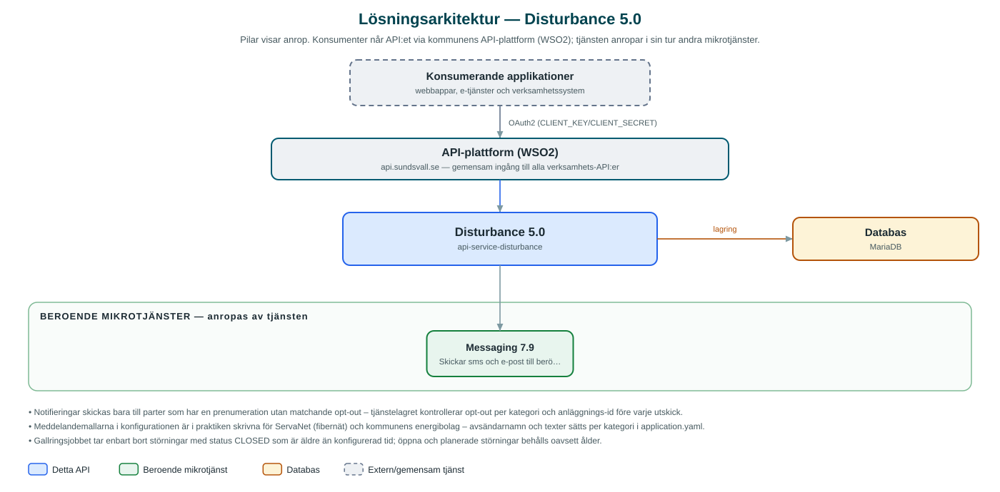

Disturbance
Hanterar driftstörningar i kommunal infrastruktur – el, fjärrvärme, vatten, fibernät med mera – och notifierar automatiskt berörda kunder via sms och e-post.
Om API:et
Disturbance håller reda på driftstörningar i den infrastruktur kommunen och dess bolag levererar: elnät, elhandel, fjärrvärme, fjärrkyla, vatten, avfallshantering och fibernät (kategorin communication används av ServaNet). Verksamhetssystem registrerar en störning med berörda anläggningar och kunder, och API:et sköter resten – från registrering till avslut.
Invånare och företag kan prenumerera på störningsinformation. När en störning skapas, uppdateras eller avslutas skickar API:et automatiskt meddelanden via kommunens Messaging-API till alla berörda som har en prenumeration – med möjlighet att välja bort (opt-out) specifika kategorier eller anläggningar. Meddelandetexterna byggs från konfigurerbara mallar per kategori, med variabler för bland annat beskrivning och beräknad åtgärdstid.
Störningar kan sökas fram per kategori, status och berörd part, så att e-tjänster kan visa aktuell driftinformation för en specifik kund eller adress.
Det här gör API:et
- Registrera störningar – Skapa, uppdatera och avsluta driftstörningar med kategori, status, berörda anläggningar och planerade start- och sluttider.
- Automatiska notifieringar – Vid ny, uppdaterad eller avslutad störning skickas sms och e-post till berörda kunder via Messaging-API:et.
- Prenumerationer med opt-out – Parter kan prenumerera på störningsinformation och välja bort enskilda kategorier eller anläggningar.
- Konfigurerbara meddelandemallar – Ämne och text per kategori och händelsetyp (ny/uppdaterad/avslutad) med variabler som ersätts med störningens uppgifter.
- Sökning och uppslag – Hämta störningar per kategori, status eller berörd part (partyId) – till exempel för att visa driftinformation i en e-tjänst.
- Automatisk gallring – Ett nattligt jobb rensar avslutade störningar som är äldre än konfigurerat antal månader (standard 24).
API-dokumentation
API:ets samtliga resurser, parametrar och datamodeller finns beskrivna i en OpenAPI-specifikation som är hämtad ur källkodsförrådet. Den kan utforskas interaktivt i Swagger UI eller laddas ner som YAML. Programvaruförteckningen (SBOM) listar tjänstens samtliga tredjepartskomponenter med version och licens.
Teknisk dokumentation
Nedan beskrivs hur tjänsten är uppbyggd, vilka andra tjänster den anropar och vad som krävs för att driftsätta den. Informationen är härledd ur källkoden och dess konfiguration på GitHub.
Arkitektur

API:et är en mikrotjänst (Java 25, Spring Boot via kommunens gemensamma tjänsteplattform dept44 (8.0.8), byggd med Maven). Konsumenter når tjänsten via kommunens gemensamma API-plattform (WSO2) på api.sundsvall.se – tjänsten anropas aldrig direkt. Tjänsten anropar i sin tur andra mikrotjänster i kommunens tjänstelandskap. Lagring: MariaDB med Flyway-migrationer; lagrar störningar, berörda parter och prenumerationer med opt-out-inställningar.
Teknikstack
- Språk: Java 25
- Ramverk: Spring Boot via kommunens gemensamma tjänsteplattform dept44 (8.0.8), byggd med Maven
- Databas: MariaDB med Flyway-migrationer; lagrar störningar, berörda parter och prenumerationer med opt-out-inställningar
- Övrigt: Resilience4j (circuit breaker mot Messaging), ShedLock för schemalagda jobb, Apache Commons Text för mallhantering
Beroenden till andra mikrotjänster
Tjänsten anropar följande mikrotjänster. Versionerna är hämtade ur källkodens integrationsklienter.
| Tjänst | Version | Användning |
|---|---|---|
| Messaging | 7.9 | Skickar sms och e-post till berörda kunder när störningar skapas, uppdateras eller avslutas. |
Programvaruförteckning
Tjänsten bygger på 262 tredjepartskomponenter fördelade på 13 olika licenser. Till skillnad från tabellen ovan, som listar andra mikrotjänster, avses här de programbibliotek som ingår i bygget. Se programvaruförteckningen för hela listan.
Konfiguration och driftsättning
- application.yaml med URL och OAuth2-klientuppgifter för Messaging-integrationen
- MariaDB-anslutning; databasschemat versionshanteras med Flyway
- Meddelandemallar per kategori (ämne, text, avsändare för sms och e-post) – notifiering kan slås av/på per kategori
- Gallringsjobb (cron, kl. 02 varje natt) med ShedLock-låsning och konfigurerbar lagringstid
- Anrop görs per kommun – municipalityId ingår i alla API-vägar
Noterbart ur källkoden
- Notifieringar skickas bara till parter som har en prenumeration utan matchande opt-out – tjänstelagret kontrollerar opt-out per kategori och anläggnings-id före varje utskick.
- Meddelandemallarna i konfigurationen är i praktiken skrivna för ServaNet (fibernät) och kommunens energibolag – avsändarnamn och texter sätts per kategori i application.yaml.
- Gallringsjobbet tar enbart bort störningar med status CLOSED som är äldre än konfigurerad tid; öppna och planerade störningar behålls oavsett ålder.
- OpenAPI-specens info.title är "api-disturbance" (härledd ur applikationsnamnet); API:et exponeras som Disturbance.
Källkod
Källkoden är öppen och finns hos Sundsvalls kommun på GitHub. I källkodsförrådet finns även instruktioner för att klona, konfigurera och starta tjänsten i egen miljö.